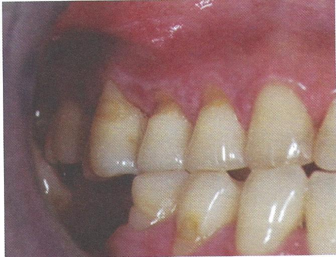

รอยโรค Lichen planus ที่เหงือก
ลักษณะรอยโรคในช่องปาก พบได้หลายลักษณะร่วมกัน ได้แก่
รอยขาว เป็นเส้นขาวคล้ายร่างแห เป็นปุ่มนูน หรือคราบขาว รอยแดง มักมีอาการเจ็บ
ลักษณะเหมือนเหงือกลอกและมีรอยแผลถลอก
รอยโรคพบมากที่กระพุ้งแก้ม รองลงมาคือ ลิ้นหรือเหงือก
การวินิจฉัย ร่วมกับการซักประวัติ ลักษณะทางคลินิก และผลตรวจทางจุลพยาธิวิทยา
การรักษา ติดตามดูรอยโรคเป็นระยะ
หากรอยโรคเป็นแผล หรือมีอาการเจ็บแสบ รักษาโดยการใช้ยาสเตียรอยด์ทาเฉพาะที่
ส่งต่อทันตแพทย์